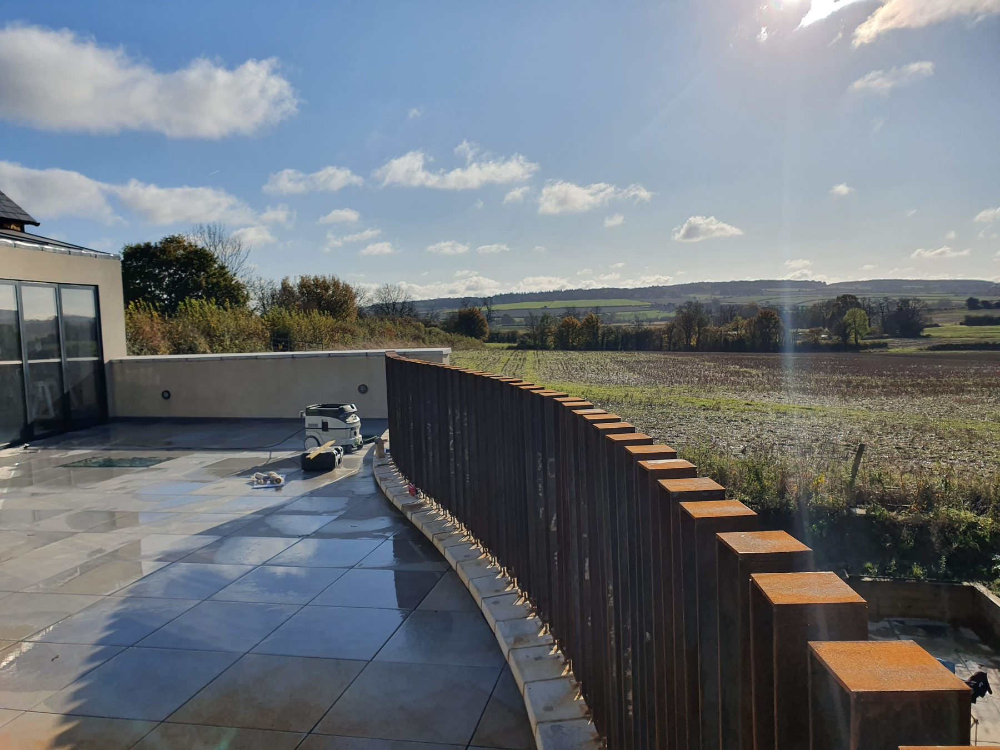
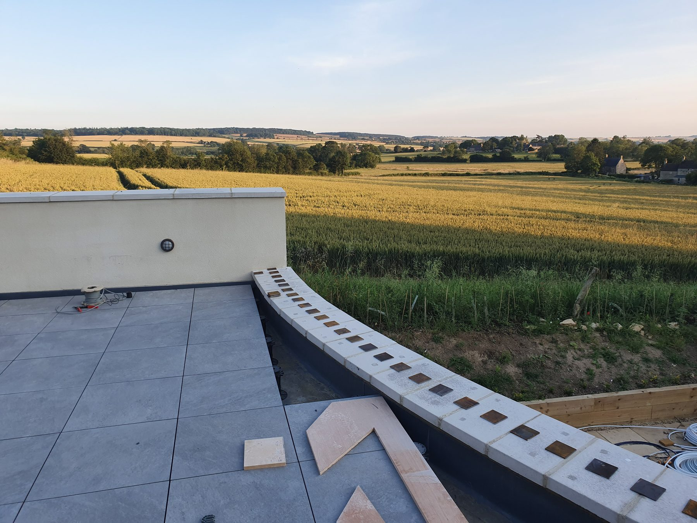
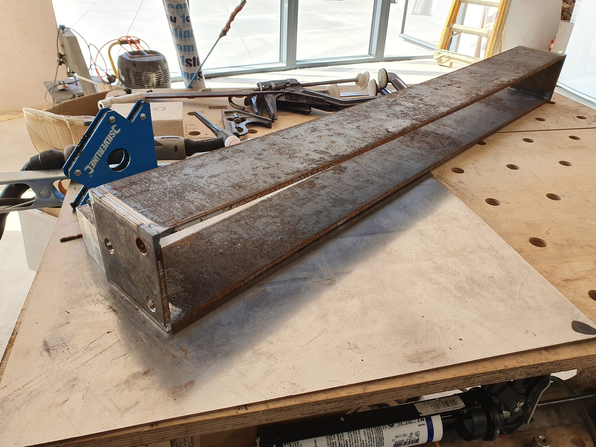
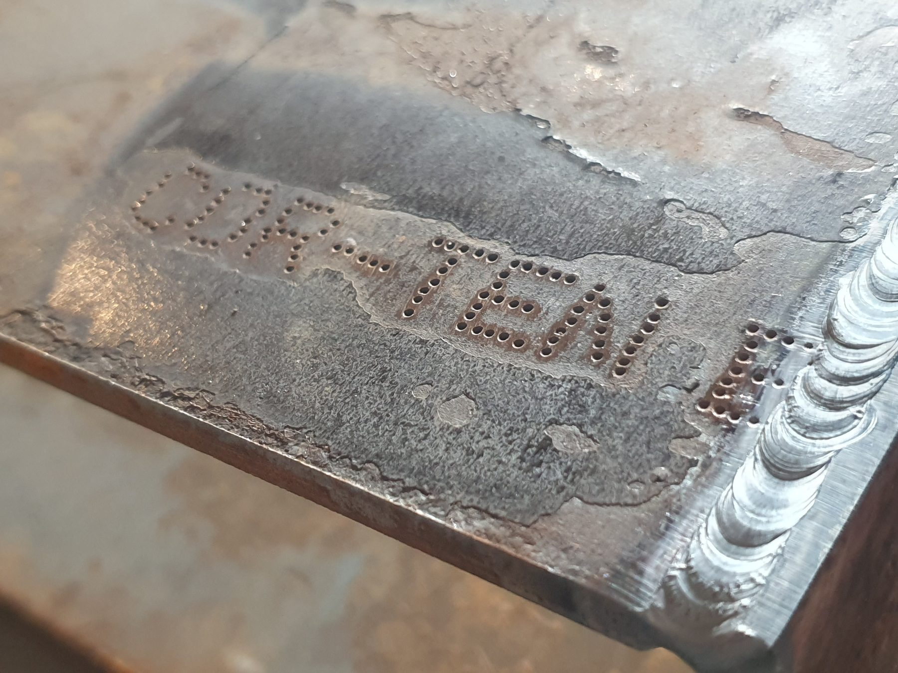
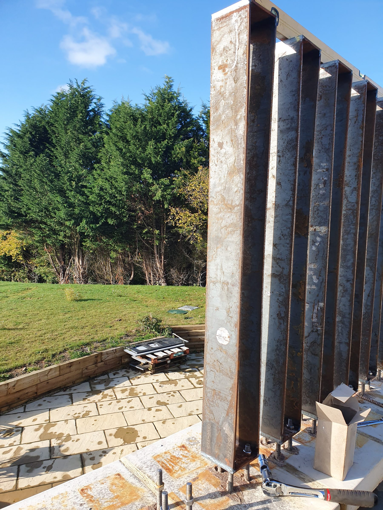
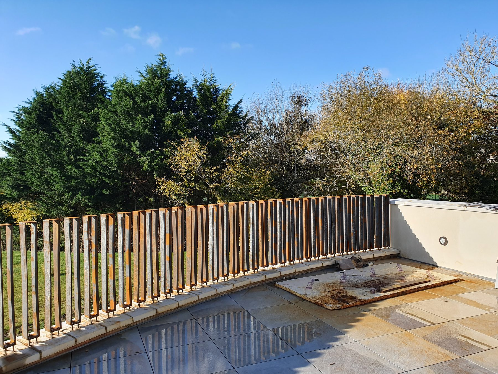
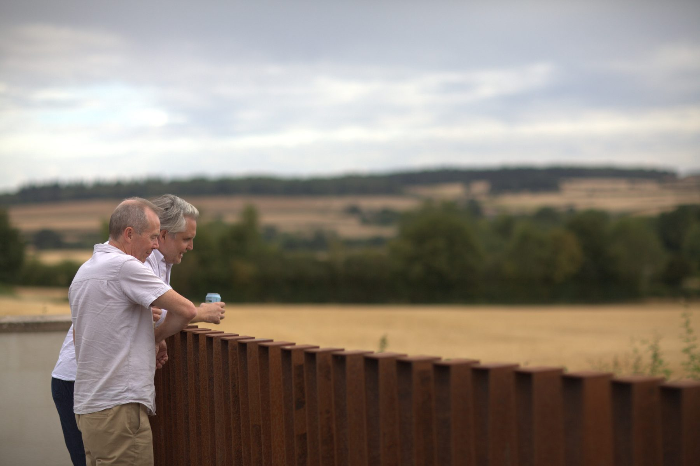
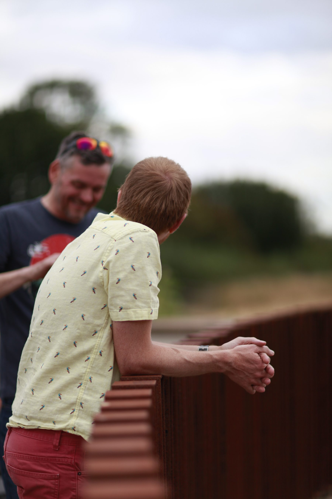
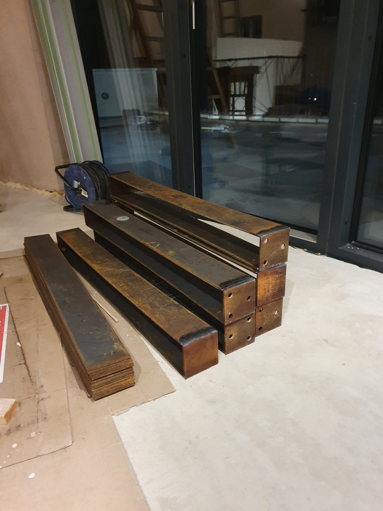
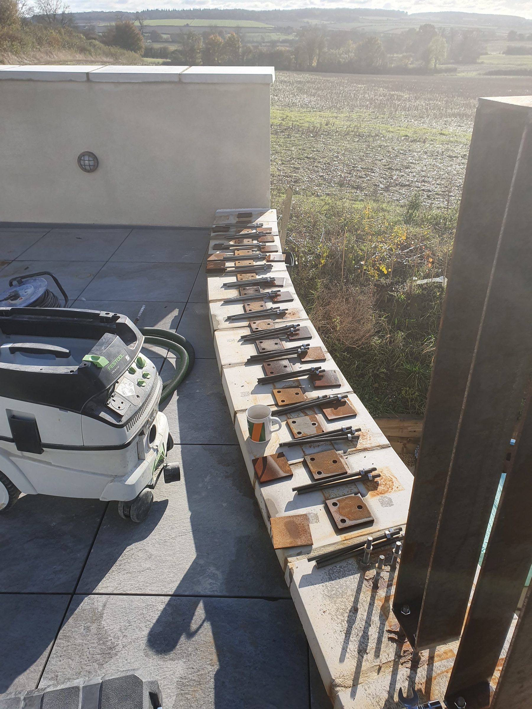

Cutting
Weathering steel / FEA / fabrication
Corten Balustrade
A curved terrace balustrade I designed, checked with FEA, fabricated from box section and installed outside so the weather could finish the job properly.
This one sits nicely in the uncomfortable overlap between architecture, structural judgement, fabrication, welding, repetition, and the stubborn belief that a terrace edge can be made much more interesting than a bought-in railing.

Design check
FEA before committing to steel.
I used a finite element model to sanity-check the post design and deflection under load before making a long row of identical mistakes in expensive steel. The screenshot shows a displacement result, with the maximum at the loaded end.
Welding
From box section to balustrade.
The constraint
A curved edge is not a straight problem.
The terrace wall curves, so the design had to follow the geometry without looking fussy. The repeated vertical sections make the curve legible, while the rusting surface gives the whole thing a softer, more natural relationship with the garden and fields.
The satisfying bit
Analysis, then sparks.
I like that this project goes from simulation to physical work without changing personality: model the risk, make the parts, check the fit, weld it together, then let time and weather do the final finishing pass.
Domestic fabrication
The kitchen was not finished. The steel was.
Some of the fabrication happened on a welding table in the unfinished kitchen, which feels very on-brand for this house build: dinner in the background, steel on the table, tools everywhere, and a balustrade slowly becoming inevitable.
In use
It became part of the place.
The nicest photos are not just the fabrication shots; they are the ones where people are leaning on it, talking, looking out across the fields. That is when the object stops being a project and starts being part of the house.








